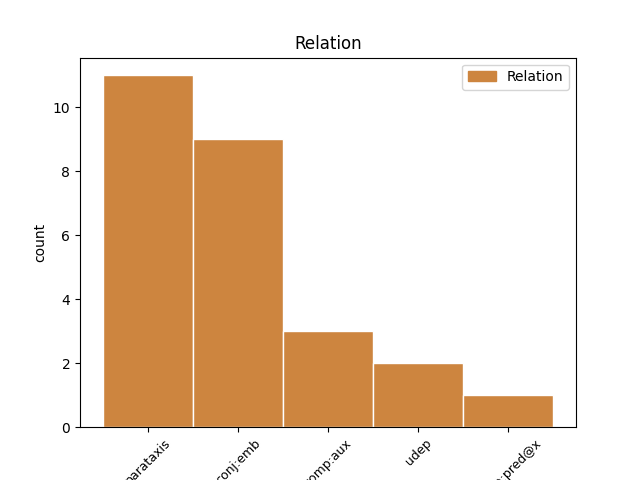
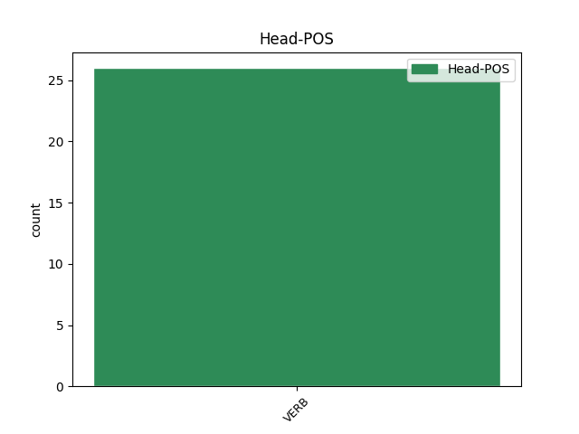
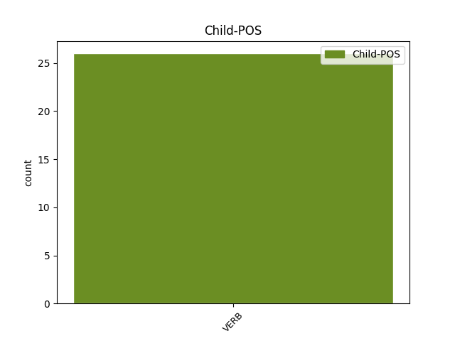

Distribution of features within this leaf



Agreement Rules sorted by frequency.
- When the dependent token is the parataxis(parataxis) of the head token, and the head token is VERB
1 Энэ _ _ _ _ 0 _ _ _
2 хадаа хадаа VERB _ Aspect=Imp|Mood=Ind|Number=Sing|Person=3|Tense=Pres|VerbForm=Fin|Voice=Act 0 _ _ _
3 буряад буряад VERB _ Aspect=Imp|Mood=Ind|Number=Sing|Person=3|Tense=Pres|VerbForm=Fin|Voice=Act 2 parataxis _ _
4 Википеэди _ _ _ _ 0 _ _ _
5 . _ _ _ _ 0 _ _ _
1 Эдэ _ _ _ _ 0 _ _ _
2 шүүмжэлэгшэдэй _ _ _ _ 0 _ _ _
3 дунда _ _ _ _ 0 _ _ _
4 Маркс _ _ _ _ 0 _ _ _
5 ба _ _ _ _ 0 _ _ _
6 тэрэнэй _ _ _ _ 0 _ _ _
7 найз _ _ _ _ 0 _ _ _
8 Энгельс _ _ _ _ 0 _ _ _
9 хоёр _ _ _ _ 0 _ _ _
10 байһан _ _ _ _ 0 _ _ _
11 юм _ _ _ _ 0 _ _ _
12 . _ _ _ _ 0 _ _ _
13 1848 _ _ _ _ 0 _ _ _
14 ондо _ _ _ _ 0 _ _ _
15 Маркс _ _ _ _ 0 _ _ _
16 болон _ _ _ _ 0 _ _ _
17 Энгельс _ _ _ _ 0 _ _ _
18 хоёр _ _ _ _ 0 _ _ _
19 коммунизмда _ _ _ _ 0 _ _ _
20 шэнэ _ _ _ _ 0 _ _ _
21 тайлбари _ _ _ _ 0 _ _ _
22 бии _ _ _ _ 0 _ _ _
23 болгоһон болго VERB _ Aspect=Perf|Mood=Imp|Number=Sing|Person=2|Tense=Past|VerbForm=Fin|Voice=Act 0 _ _ _
24 ба _ _ _ _ 0 _ _ _
25 « _ _ _ _ 0 _ _ _
26 Коммунис _ _ _ _ 0 _ _ _
27 тунхаг _ _ _ _ 0 _ _ _
28 » _ _ _ _ 0 _ _ _
29 номоо _ _ _ _ 0 _ _ _
30 олоной _ _ _ _ 0 _ _ _
31 хүрэтэр _ _ _ _ 0 _ _ _
32 болгоһон болго VERB _ Mood=Ind|Number=Plur|Person=1|Tense=Past|VerbForm=Fin 23 conj:emb _ _
33 . _ _ _ _ 0 _ _ _
1 Домогто _ _ _ _ 0 _ _ _
2 үгүүлһэнээр _ _ _ _ 0 _ _ _
3 тэрэнэй _ _ _ _ 0 _ _ _
4 нүхэр _ _ _ _ 0 _ _ _
5 Леофрикта _ _ _ _ 0 _ _ _
6 ноогдуулһан _ _ _ _ 0 _ _ _
7 үндэр _ _ _ _ 0 _ _ _
8 татабариие _ _ _ _ 0 _ _ _
9 багадхахые _ _ _ _ 0 _ _ _
10 шаардажа _ _ _ _ 0 _ _ _
11 Ковентри _ _ _ _ 0 _ _ _
12 хотын _ _ _ _ 0 _ _ _
13 гудамжаар _ _ _ _ 0 _ _ _
14 нюсэгэн _ _ _ _ 0 _ _ _
15 дабхиһан дабхи VERB _ Case=Nom|Tense=Past|VerbForm=Part 16 comp:aux _ _
16 гэдэг гэдэ VERB _ Mood=Ind|Number=Sing|Person=3|Tense=Past|VerbForm=Fin 0 _ _ _
17 . _ _ _ _ 0 _ _ _
1 Сербишууд _ _ _ _ 0 _ _ _
2 Косовын _ _ _ _ 0 _ _ _
3 тулаанда _ _ _ _ 0 _ _ _
4 одоогой _ _ _ _ 0 _ _ _
5 нэрээр _ _ _ _ 0 _ _ _
6 Гнилане _ _ _ _ 0 _ _ _
7 ойрол _ _ _ _ 0 _ _ _
8 соо _ _ _ _ 0 _ _ _
9 буужа _ _ _ _ 0 _ _ _
10 үгэһэн _ _ _ _ 0 _ _ _
11 . _ _ _ _ 0 _ _ _
12 1916 _ _ _ _ 0 _ _ _
13 оной _ _ _ _ 0 _ _ _
14 1 _ _ _ _ 0 _ _ _
15 һарын _ _ _ _ 0 _ _ _
16 6-һаа _ _ _ _ 0 _ _ _
17 7-ний _ _ _ _ 0 _ _ _
18 хоорондо _ _ _ _ 0 _ _ _
19 Черногори _ _ _ _ 0 _ _ _
20 Сербишуудые _ _ _ _ 0 _ _ _
21 Мойковаце _ _ _ _ 0 _ _ _
22 тулалдаанда тулалдаа VERB _ Case=Loc|Tense=Past|VerbForm=Ger 31 udep _ _
23 Адриатикын _ _ _ _ 0 _ _ _
24 эрье _ _ _ _ 0 _ _ _
25 рүү _ _ _ _ 0 _ _ _
26 ухраажа _ _ _ _ 0 _ _ _
27 шадсымаа _ _ _ _ 0 _ _ _
28 гэбшье _ _ _ _ 0 _ _ _
29 Австришууд _ _ _ _ 0 _ _ _
30 Черногорие _ _ _ _ 0 _ _ _
31 барибашалһан барибашалһ VERB _ Mood=Ind|Number=Sing|Person=3|Tense=Past|VerbForm=Fin 0 _ _ _
32 . _ _ _ _ 0 _ _ _
1 Тобшо _ _ _ _ 0 _ _ _
2 намтар _ _ _ _ 0 _ _ _
3 Буддын _ _ _ _ 0 _ _ _
4 багын _ _ _ _ 0 _ _ _
5 нэрэнь нэрэ VERB _ Case=Nom|Tense=Past|VerbForm=Part 8 comp:pred@x _ _
6 Сидхарттха _ _ _ _ 0 _ _ _
7 , _ _ _ _ 0 _ _ _
8 обог обог VERB _ Mood=Ind|Number=Sing|Person=3|Tense=Past|VerbForm=Fin 0 _ _ _
9 Гаутама _ _ _ _ 0 _ _ _
10 . _ _ _ _ 0 _ _ _
Disagree Examples:
1 Сахилгаан _ _ _ _ 0 _ _ _
2 суранзан _ _ _ _ 0 _ _ _
3 хүсэниинь _ _ _ _ 0 _ _ _
4 сахилгаан _ _ _ _ 0 _ _ _
5 орон _ _ _ _ 0 _ _ _
6 , _ _ _ _ 0 _ _ _
7 суранзан _ _ _ _ 0 _ _ _
8 ороной _ _ _ _ 0 _ _ _
9 али _ _ _ _ 0 _ _ _
10 алинда _ _ _ _ 0 _ _ _
11 элирхыгээр _ _ _ _ 0 _ _ _
12 үзэгдэнэ үзэгдэ VERB _ Mood=Ind|Number=Sing|Person=3|Tense=Aor|VerbForm=Fin 0 _ _ _
13 : _ _ _ _ 0 _ _ _
14 энэ _ _ _ _ 0 _ _ _
15 хоёрынь _ _ _ _ 0 _ _ _
16 юрэдөөл _ _ _ _ 0 _ _ _
17 сахилгаан _ _ _ _ 0 _ _ _
18 суранзангай _ _ _ _ 0 _ _ _
19 хоёр _ _ _ _ 0 _ _ _
20 түрэхэ түрэ VERB _ Mood=Ind|Number=Sing|Person=3|Tense=Pres|VerbForm=Fin|Voice=Act 12 parataxis _ _
21 , _ _ _ _ 0 _ _ _
22 иимэдэ _ _ _ _ 0 _ _ _
23 хоорондоо _ _ _ _ 0 _ _ _
24 нарин _ _ _ _ 0 _ _ _
25 уялдаатай _ _ _ _ 0 _ _ _
26 . _ _ _ _ 0 _ _ _
1 Фермын _ _ _ _ 0 _ _ _
2 ажахынь _ _ _ _ 0 _ _ _
3 гэр _ _ _ _ 0 _ _ _
4 бүлээрээ _ _ _ _ 0 _ _ _
5 ( _ _ _ _ 0 _ _ _
6 ехэбшэлэн _ _ _ _ 0 _ _ _
7 гэр _ _ _ _ 0 _ _ _
8 бүлээрээ _ _ _ _ 0 _ _ _
9 ажалладаг _ _ _ _ 0 _ _ _
10 болон _ _ _ _ 0 _ _ _
11 фермэ _ _ _ _ 0 _ _ _
12 дээрээ _ _ _ _ 0 _ _ _
13 амидардаг _ _ _ _ 0 _ _ _
14 ) _ _ _ _ 0 _ _ _
15 гэмтэл _ _ _ _ 0 _ _ _
16 бэртэл _ _ _ _ 0 _ _ _
17 абаха аба VERB _ Aspect=Hab|Mood=Ind|Number=Sing|Person=3|Polarity=Pos|Tense=Pres 0 _ _ _
18 , _ _ _ _ 0 _ _ _
19 үбшэн _ _ _ _ 0 _ _ _
20 туһаха туһа VERB _ Gender=Neut|Mood=Ind|Number=Sing|Person=3|Polarity=Pos|Tense=Fut|VerbForm=Fin|Voice=Act 17 conj:emb _ _
21 , _ _ _ _ 0 _ _ _
22 үхэхэ _ _ _ _ 0 _ _ _
23 эрэсдэлтэй _ _ _ _ 0 _ _ _
24 үсөөхэн _ _ _ _ 0 _ _ _
25 ажаүйлэдбэринүүдэй _ _ _ _ 0 _ _ _
26 нэгэ _ _ _ _ 0 _ _ _
27 юм _ _ _ _ 0 _ _ _
28 . _ _ _ _ 0 _ _ _
1 Хүнгэн _ _ _ _ 0 _ _ _
2 сагаан _ _ _ _ 0 _ _ _
3 хүшэлтүрэгшэтэй _ _ _ _ 0 _ _ _
4 эршэмтэй _ _ _ _ 0 _ _ _
5 харилсан _ _ _ _ 0 _ _ _
6 үйлэшэлэлсэжэ _ _ _ _ 0 _ _ _
7 Al _ _ _ _ 0 _ _ _
8 2 _ _ _ _ 0 _ _ _
9 O _ _ _ _ 0 _ _ _
10 3 _ _ _ _ 0 _ _ _
11 гэһэн _ _ _ _ 0 _ _ _
12 оксид _ _ _ _ 0 _ _ _
13 үүсхэнэ үүсхэ VERB _ Mood=Ind|Number=Sing|Person=3|Tense=Aor|VerbForm=Fin 0 _ _ _
14 . _ _ _ _ 0 _ _ _
15 4Al+3O _ _ _ _ 0 _ _ _
16 2 _ _ _ _ 0 _ _ _
17 →2 _ _ _ _ 0 _ _ _
18 Al _ _ _ _ 0 _ _ _
19 2 _ _ _ _ 0 _ _ _
20 O _ _ _ _ 0 _ _ _
21 3 _ _ _ _ 0 _ _ _
22 Хүнгэн _ _ _ _ 0 _ _ _
23 сагаан _ _ _ _ 0 _ _ _
24 агаарта _ _ _ _ 0 _ _ _
25 эһэлдэһэнэй _ _ _ _ 0 _ _ _
26 дүндэ _ _ _ _ 0 _ _ _
27 тэрэнэй _ _ _ _ 0 _ _ _
28 гадаргууда _ _ _ _ 0 _ _ _
29 оксидой _ _ _ _ 0 _ _ _
30 нягта _ _ _ _ 0 _ _ _
31 бүрхөөг _ _ _ _ 0 _ _ _
32 бии бии VERB _ Mood=Ind|Number=Sing|Person=3|Tense=Past|VerbForm=Fin 13 parataxis _ _
33 болоно _ _ _ _ 0 _ _ _
34 . _ _ _ _ 0 _ _ _